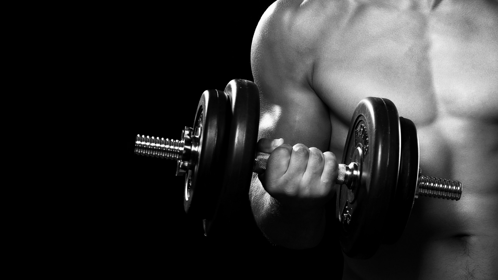

.jpg)
TIPS POLA HIDUP SEHAT
**********************************************************
"THE WORKOUT" akan memberikan beberapa tips tentang Pola hidup sehat serta membuat tubuh ideal yang bisa anda lakukan dirumah,tanpa harus diet ketat atau semacamnya, cukup dengan melakukan beberapa aktifitas seperti dibawah ini: .
1. Menjaga Pola Makan:
- Pagi sarapan dengan Oats, Susu rendah lemak, Roti, Telur, Sereal atau semacamnya, selain makanan yg mengandung Karbo dan Lemak.
- Siang makan dengan nasi secukupnya, lebih bagus dengan beras merah, lauk bisa dengan dada ayam rebus, telur, daun singkong rebus atau makanan yang banyak mengandung serat dan protein, perbanyak konsumsi air putih.
- Malam makan sebelum jam 8, cukup dengan buah atau sayuran, konsumsi air putih.
2. Olahraga Teratur:
- Untuk menjaga kebugaran bisa dengan Jogging pada pagi hari, usahakan pemanasan/peregangan terlebih dahulu.
- Untuk membakar lemak dan meningkatkan fisik bisa dengan Jogging pada siang atau sore hari, usahakan pemanasan/peregangan terlebih dahulu.
-Push Up, Sit Up, Pull Up dan beberapa bentuk latihan lainnya dengan beberapa set atau repetisi, usahakan setiap harinya jumlah set atau repetisinya meningkat.
3. Menjaga Pola Istirahat:
-Tidur sebelum jam 10 malam, bangun tidur sebelum jam 6 pagi.
Anjuran: Perbanyak konsumsi air putih, susu rendah lemak, buah buahan dan sayuran, makanan berserat tinggi, protein, vitamin dan kalsium, melakukan rutinitas olahraga untuk menjaga kebugaran, dan hal positif lainnya.
Larangan: Hindari makanan yang banyak mengandung Lemak, Gula dan Penyedap rasa, hindari makanan atau minuman junkfood, jangan begadang, jangan melakukan kegiatan fisik yang berlebihan, hindari panganan yang disajikan dengan menggoreng, kalau ingin juga yang digoreng lebih baik minyak gorengnya diganti dengan Margarin atau mentega yang rendah lemak, dan lainnya.
Catatan: Untuk mendapatkan hasil yang optimal alangkah baiknya konsultasikan terlebih dahulu kepada Dokter atau Praktisi kesehatan untuk kegiatan fisik dan pola makan agar sesuai dengan keadaan Jasmani kalian.
SEMOGA BERMANFAAT, SEKIAN DAN TERIMAKASIH
.....................................................................................
SUDAH PUNYA AKUN MEMBER ?
Silahkan Login